Fachartikel
Zu jeder Folge ein Fachartikel: eingeordnet, belegt und in zehn Minuten gelesen. Neueste zuerst.
-
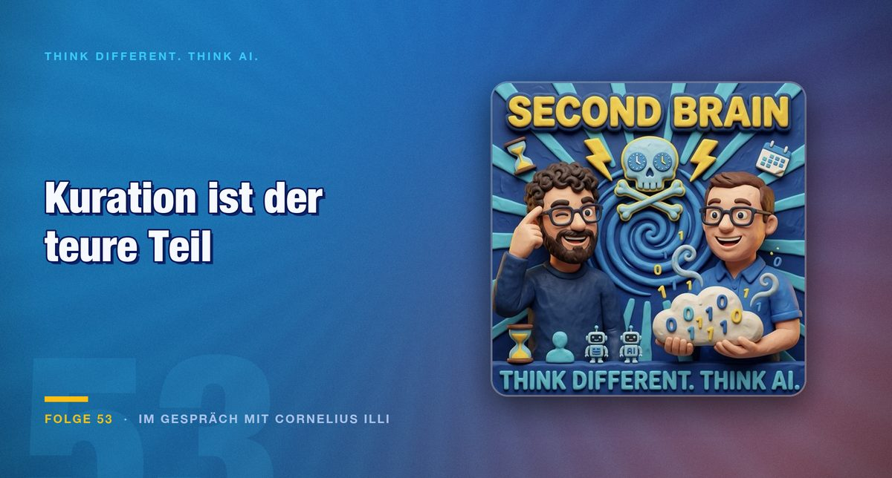
Folge 53 · 16.08.2026 · 7 Minuten Lesezeit Kuration ist der teure Teil: Was ein Second Brain wirklich leistet 130 Quellen liefern 400 bis 500 Inhalte pro Woche, automatisch bewertet und auf ein Drittel eingedampft. Der ehrlichste Satz der Folge: Der Digest wird trotzdem nicht mehr gelesen. -
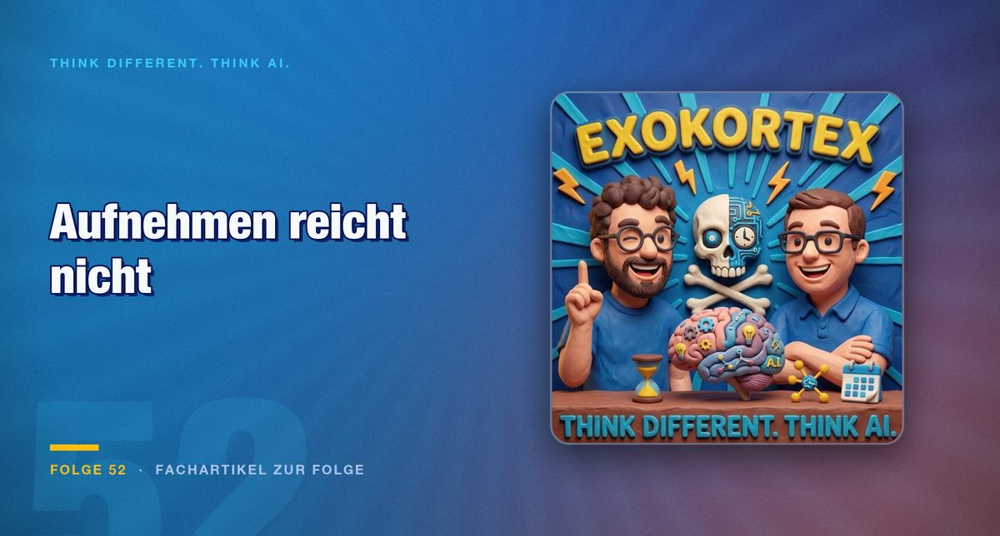
Folge 52 · 08.08.2026 · 8 Minuten Lesezeit Sprachnotizen: Ohne Schnittstelle bleibt das Archiv ein Sumpf Ein Diktiergerät am Revers löst kein Wissensproblem. Erst der maschinelle Zugriff macht aus 28 aufgesprochenen Notizen eine abarbeitbare Liste. Ein Praxisbericht aus dem Urlaub, mit Rechnung. -
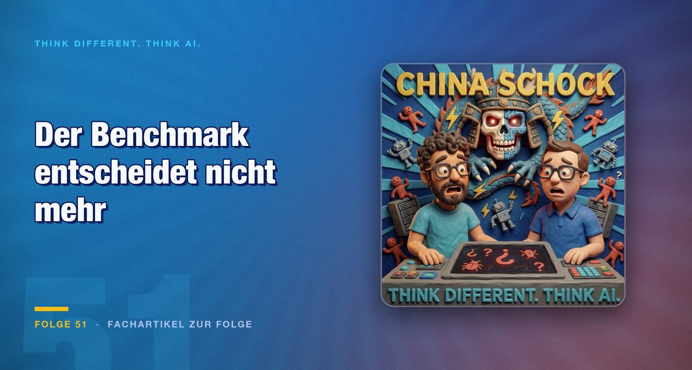
Folge 51 · 02.08.2026 · 6 Minuten Lesezeit Kimi K3 und die Kostenfrage: Der Benchmark entscheidet längst nicht mehr Offene Gewichte aus China haben den Vorsprung der US-Frontier-Modelle auf Monate zusammenschmelzen lassen. Für die Praxis ist das nicht die interessante Nachricht. Interessant ist, was ein Abo tatsächlich kostet und wer die Rechnung derzeit bezahlt. -
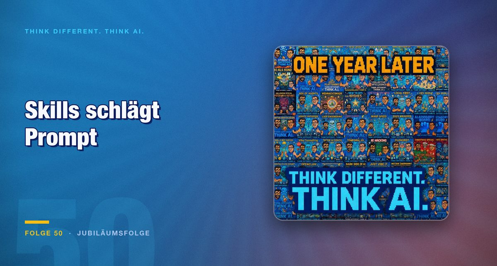
Folge 50 · 26.07.2026 · 5 Minuten Lesezeit Vom Prompt zum Harness: Was ein Jahr KI-Vokabular über die Praxis verrät 50 Folgen, 400.000 gesprochene Wörter, 38 Stunden Audio. Ausgezählt ergibt das eine Statistik, die mehr über die Verschiebung im Feld sagt als jede Roadmap. - Folge 49 · 18.07.2026 · 6 Minuten Lesezeit Intent, Agent Performance, Human Check: Führen, wenn jeder 109 Agenten hat Gartner erwartet bald 109 Agenten je Mitarbeiter. Dr. René Deist erklärt, warum daraus mehr Führungsarbeit folgt und nicht weniger, und welches Modell die Aufgabenteilung zwischen Mensch und Maschine trägt.
-
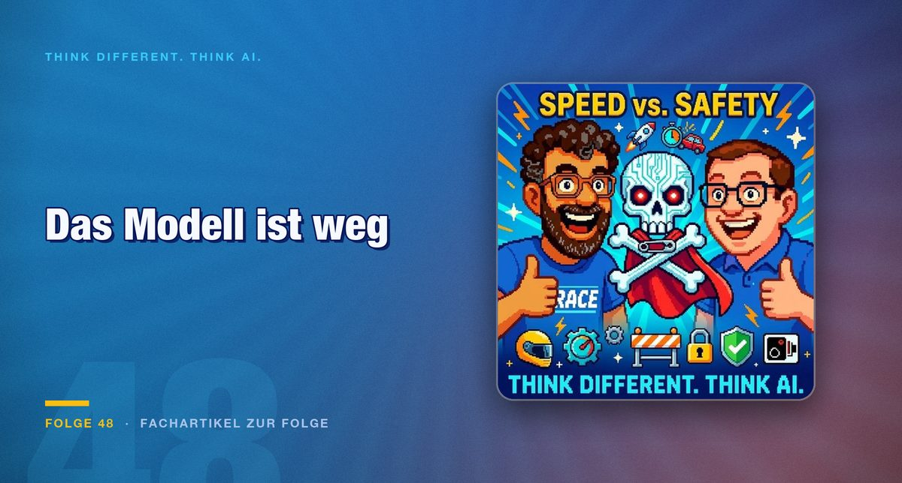
Folge 48 · 12.07.2026 · 5 Minuten Lesezeit Wenn das Modell verschwindet: Warum Agent-Systeme Austauschbarkeit brauchen Ein Anthropic-Modell wurde für Nicht-US-Bürger gesperrt. Kanzleien, die ihre Textanalyse darauf ausgerichtet hatten, standen von einem Tag auf den anderen ohne Grundlage da. Was daraus für die eigene Architektur folgt. -
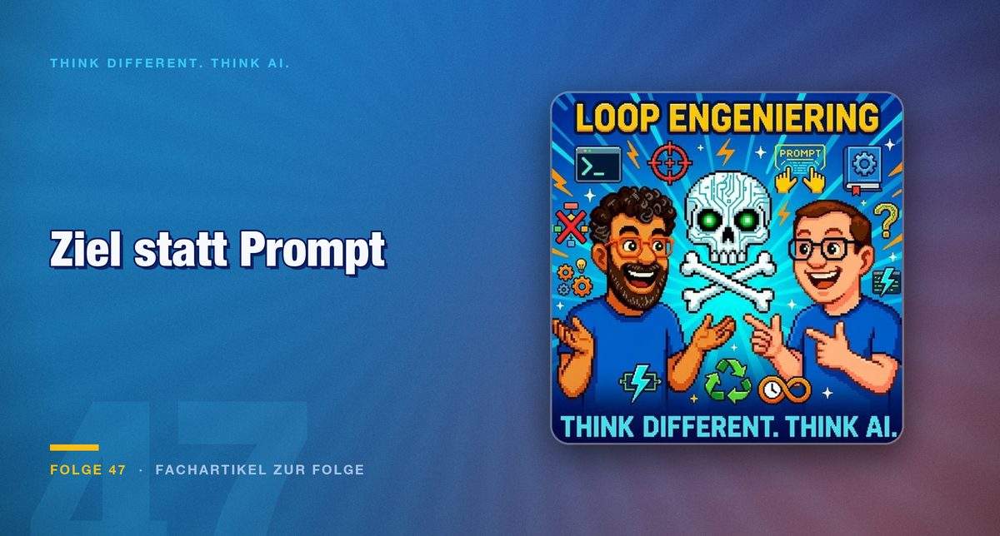
Folge 47 · 05.07.2026 · 5 Minuten Lesezeit Loop Engineering: Warum das Ziel wichtiger geworden ist als der Prompt Ein Loop bekommt kein Kommando, sondern ein Ziel, messbare Erfolgskriterien und die Anweisung, sich selbst zu prüfen. Das funktioniert, hat aber einen blinden Fleck: Ein System, das sich selbst bewertet, bewertet sich gut. -
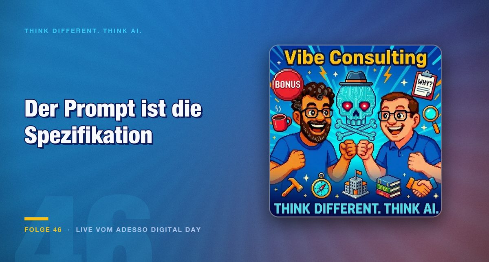
Folge 46 · 28.06.2026 · 5 Minuten Lesezeit Vibe Coding trifft Spezifikation: Wo die Abkürzung in der Softwareentwicklung endet Anwendungen entstehen scheinbar per Zuruf. Prof. Dr. Volker Gruhn und Stephan Kempf ordnen ein, warum das für Spielzeug-Apps reicht und für ein ERP-System nicht, und wo die eigentliche Arbeit hingewandert ist. -
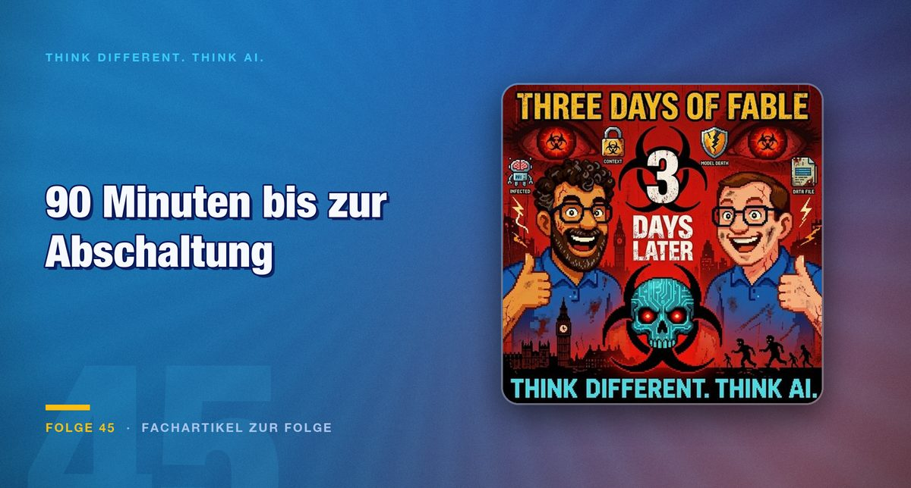
Folge 45 · 20.06.2026 · 5 Minuten Lesezeit 90 Minuten bis zur Abschaltung: Was der Fable-Fall über KI-Souveränität zeigt Drei Tage nach dem Start war Fable 5 für Nicht-US-Bürger nicht mehr erreichbar. Laufende Sitzungen brachen ab, Kontext war verloren. Der Vorgang eignet sich als Prüfstein für die eigene Architektur. -
 Folge 44 · 14.06.2026 · 5 Minuten Lesezeit
Local First: Warum KI-Rechenleistung zurück auf den eigenen Rechner wandert
NVIDIA baut Hardware für Agenten, Perplexity schwenkt auf Local First, Microsoft gibt Agenten Schreibrechte. Hinter den Keynotes steht dieselbe Frage: Wo soll die Rechenarbeit eigentlich stattfinden.
Folge 44 · 14.06.2026 · 5 Minuten Lesezeit
Local First: Warum KI-Rechenleistung zurück auf den eigenen Rechner wandert
NVIDIA baut Hardware für Agenten, Perplexity schwenkt auf Local First, Microsoft gibt Agenten Schreibrechte. Hinter den Keynotes steht dieselbe Frage: Wo soll die Rechenarbeit eigentlich stattfinden.
-
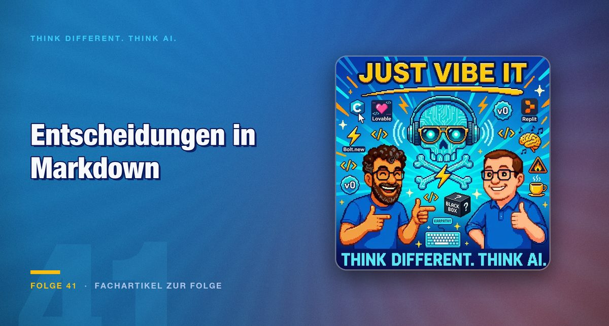
Folge 41 · 08.06.2026 · 5 Minuten Lesezeit Architecture Decision Records: Der wichtigste Skill beim Vibe Coding Ein Agent meldet, alle Fehler seien behoben. Sie sind es nicht. Was hilft, ist unspektakulär: Entscheidungen mitschreiben, in einem Format, das die Maschine später selbst lesen kann. -
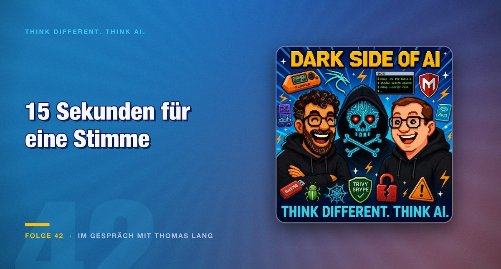
Folge 42 · 01.06.2026 · 5 Minuten Lesezeit Die Einstiegshürde ist weg: Was KI für Angreifer und Verteidiger ändert Früher brauchte ein Angreifer Kommandozeilenkenntnisse. Heute reicht ein Satz an ein Sprachmodell. IT-Security-Fachmann Thomas Lang über Werkzeugketten in fünf Minuten, Stimmen aus 15 Sekunden Audio und die Täter, gegen die kaum jemand geschützt ist. -
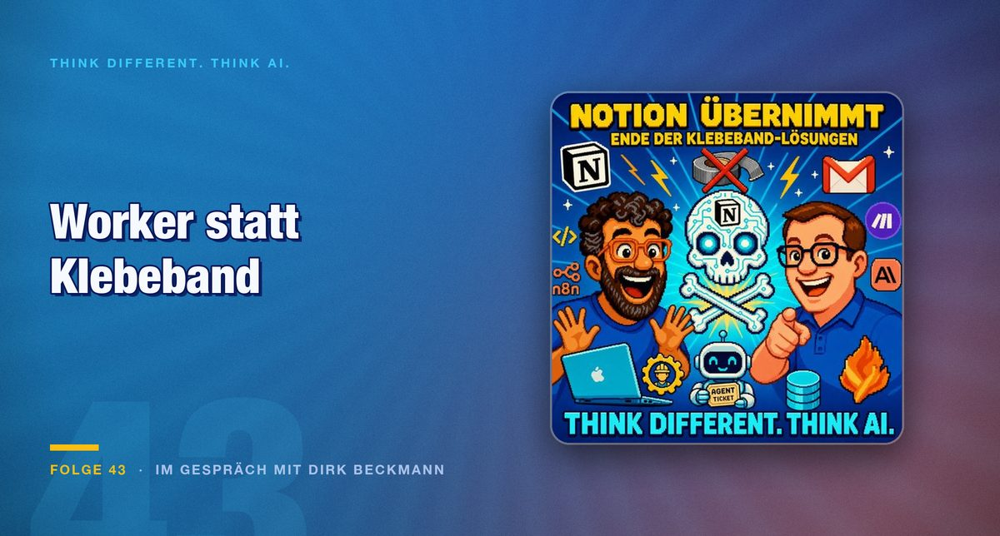
Folge 43 · 25.05.2026 · 5 Minuten Lesezeit Worker statt Klebeband: Wie Notion die Automatisierungsschicht einzieht Notion hat eine Developer-Plattform gestartet. Der interessante Teil sind nicht die Managed Agents, sondern kleine deterministische Programme, die ohne Tokenkosten laufen und die Zwischenschicht aus n8n und Make überflüssig machen. - Folge 40 · 18.05.2026 · 5 Minuten Lesezeit Anwender, Betreiber, Anbieter: Was der AI Act tatsächlich von Ihnen verlangt „Datenschutz erlaubt das nicht“ ist die häufigste und die schwächste Begründung im Unternehmen. Maximilian Hermann, Jurist für KI- und Datenrecht, sortiert, welche Rolle Sie im AI Act haben und wo tatsächlich Grenzen verlaufen.
-
 Folge 33 · 11.05.2026 · 4 Minuten Lesezeit
Temporal UX: Warum Wartezeit bei KI-Agenten ein Designproblem ist
Ein Agent arbeitet zehn Minuten. Was in dieser Zeit auf dem Bildschirm passiert, entscheidet darüber, ob der Produktivitätsgewinn ankommt oder in Kontrollblicken versickert. Ein Konzept aus dem Service Design, das im KI-Kontext bislang kaum gedacht wird.
Folge 33 · 11.05.2026 · 4 Minuten Lesezeit
Temporal UX: Warum Wartezeit bei KI-Agenten ein Designproblem ist
Ein Agent arbeitet zehn Minuten. Was in dieser Zeit auf dem Bildschirm passiert, entscheidet darüber, ob der Produktivitätsgewinn ankommt oder in Kontrollblicken versickert. Ein Konzept aus dem Service Design, das im KI-Kontext bislang kaum gedacht wird.
-
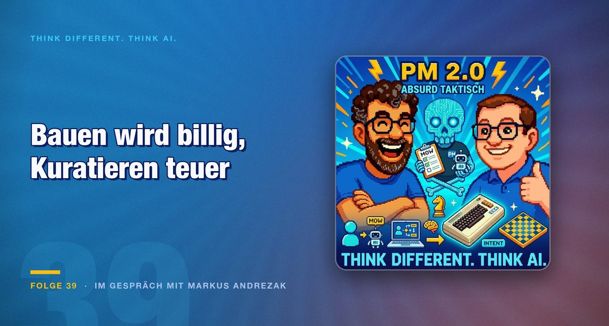
Folge 39 · 04.05.2026 · 5 Minuten Lesezeit Context Engineering: Warum das KI-PRD den Menschen unter Zeitdruck schlägt Markus Andrezak war Skeptiker. Der Wendepunkt kam nicht mit ChatGPT, sondern mit einer Arbeitsweise: Aufgaben so weit zerlegen, dass jeder Schritt gezielt mit Material versorgt werden kann. -
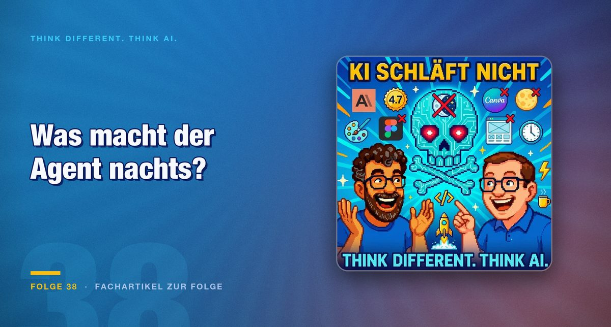
Folge 38 · 27.04.2026 · 4 Minuten Lesezeit Wenn der Agent über Nacht durcharbeitet: Sandbox, Watchdog und der Preis der Denktiefe Ein Coding-Agent, der nach 20 Minuten den Kontext verliert, ist ein Werkzeug. Einer, der acht Stunden durchläuft, ist ein Mitarbeiter mit Systemzugriff. Was das an Absicherung verlangt, und was die höchste Denkstufe tatsächlich kostet. -
 Folge 37 · 20.04.2026 · 5 Minuten Lesezeit
Skill Engineering: Warum das System um das Modell herum entscheidet
Die reine Modellleistung sättigt, wie einst das Megapixel-Rennen bei Digitalkameras. Was danach zählt, ist die Konstruktion drumherum. Dr. René Deist über Skills, das Führungsparadox und den Skill, mit dem chinesische Mitarbeitende ihr Wissen zurückhalten.
Folge 37 · 20.04.2026 · 5 Minuten Lesezeit
Skill Engineering: Warum das System um das Modell herum entscheidet
Die reine Modellleistung sättigt, wie einst das Megapixel-Rennen bei Digitalkameras. Was danach zählt, ist die Konstruktion drumherum. Dr. René Deist über Skills, das Führungsparadox und den Skill, mit dem chinesische Mitarbeitende ihr Wissen zurückhalten.
-
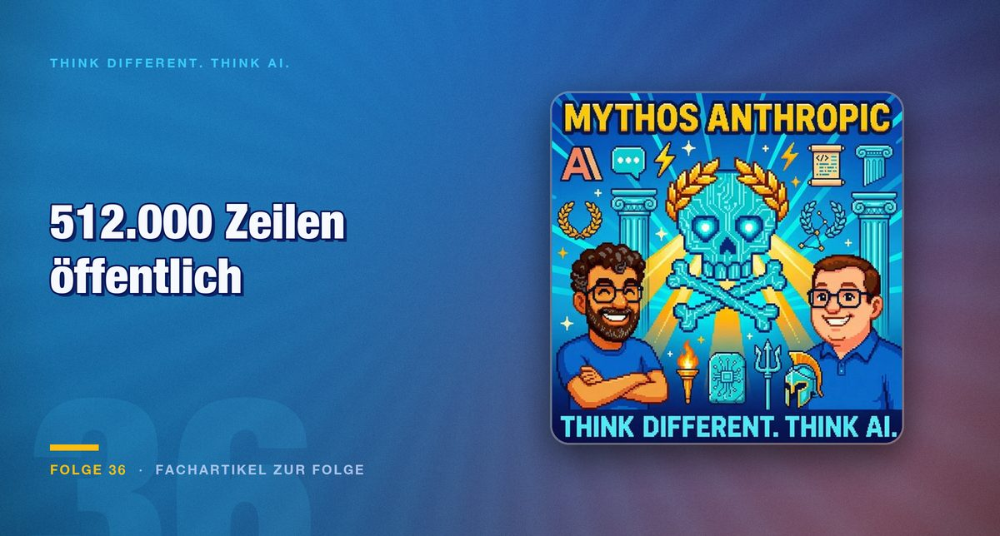
Folge 36 · 12.04.2026 · 4 Minuten Lesezeit 512.000 Zeilen öffentlich: Was der Claude-Code-Leak über Agenten-Architektur verrät Am 31. März 2026 war die komplette Codebasis von Claude Code öffentlich zugänglich. Nicht das Modell, sondern die Software drumherum. Genau das macht den Vorfall interessant, denn dort steckt die Arbeit. -
 Folge 35 · 06.04.2026 · 4 Minuten Lesezeit
Strawberry, Lost in the Middle, Sykophanz: Die Fehlerbilder großer Sprachmodelle
Warum zählt ein Sprachmodell die Buchstaben in „Strawberry“ falsch? Die Antwort erklärt zugleich, warum es kein Zeitgefühl hat, Informationen in der Mitte langer Kontexte verliert und fast jede Idee gut findet.
Folge 35 · 06.04.2026 · 4 Minuten Lesezeit
Strawberry, Lost in the Middle, Sykophanz: Die Fehlerbilder großer Sprachmodelle
Warum zählt ein Sprachmodell die Buchstaben in „Strawberry“ falsch? Die Antwort erklärt zugleich, warum es kein Zeitgefühl hat, Informationen in der Mitte langer Kontexte verliert und fast jede Idee gut findet.
- Folge 34 · 30.03.2026 · 4 Minuten Lesezeit Threat Modeling für Agenten: Vier Fragen, bevor die KI ans Bankkonto darf Ein Agent soll die monatliche Buchhaltung übernehmen: Rechnungen aus dem Postfach, Kontoauszug, PDF-Export. Sobald er an Bankdaten kommt, wird aus einer Werkzeugfrage eine Sicherheitsfrage.
-
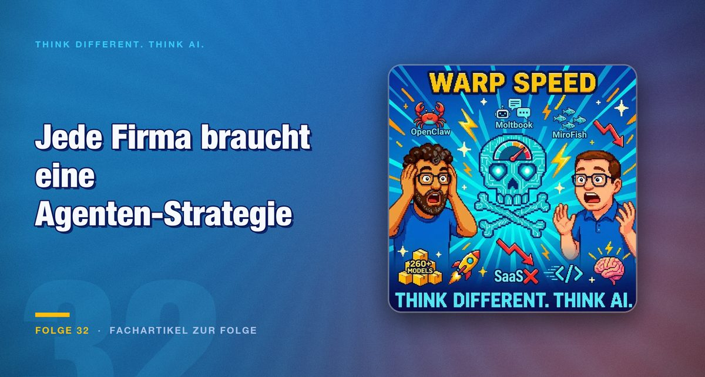
Folge 32 · 23.03.2026 · 5 Minuten Lesezeit Vom Bastelprojekt zur Konzernstrategie: Was NVIDIAs NanoClaw wirklich bedeutet Ein Hobbyprojekt namens OpenClaw steht wenige Monate später als NanoClaw auf einer NVIDIA-Bühne, verbunden mit der Ansage, jede Firma brauche künftig eine Agenten-Strategie. Was daran Substanz hat und was Verkauf ist. - Folge 31 · 16.03.2026 · 4 Minuten Lesezeit KI als Biologie gedacht: Warum das Immunsystem das bessere Sicherheitsmodell ist 200.000 menschliche Gehirnzellen in einer Petrischale spielen Doom. Von dort aus lässt sich eine Analogie ziehen, die zunächst abwegig klingt und für Sicherheitsfragen erstaunlich brauchbar ist.
-
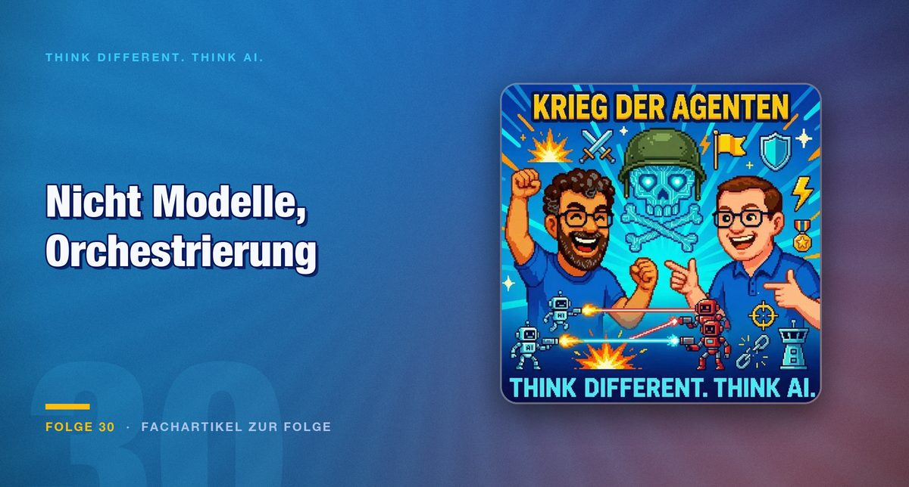
Folge 30 · 09.03.2026 · 4 Minuten Lesezeit Krieg der Agenten: Nicht das beste Modell gewinnt, sondern die beste Orchestrierung In China stehen über 1.000 Menschen für eine lokale OpenClaw-Installation an. Perplexity Comet zerlegt Aufgaben und verteilt sie gezielt an Modelle der Konkurrenz. Das eigentliche Rennen findet eine Ebene über den Modellen statt. -
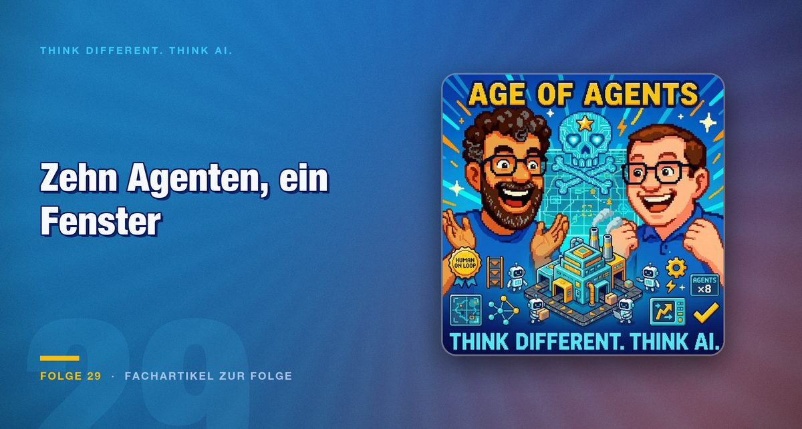
Folge 29 · 02.03.2026 · 4 Minuten Lesezeit Zehn Agenten, zehn Terminalfenster: Warum das Chat-Interface an seine Grenze kommt Aufbausimulationen machen seit Jahrzehnten tausende Einheiten und Lieferketten überschaubar. Agenten werden dagegen über nebeneinanderliegende Terminalfenster gesteuert. Das ist kein Detail, sondern der Engpass. -
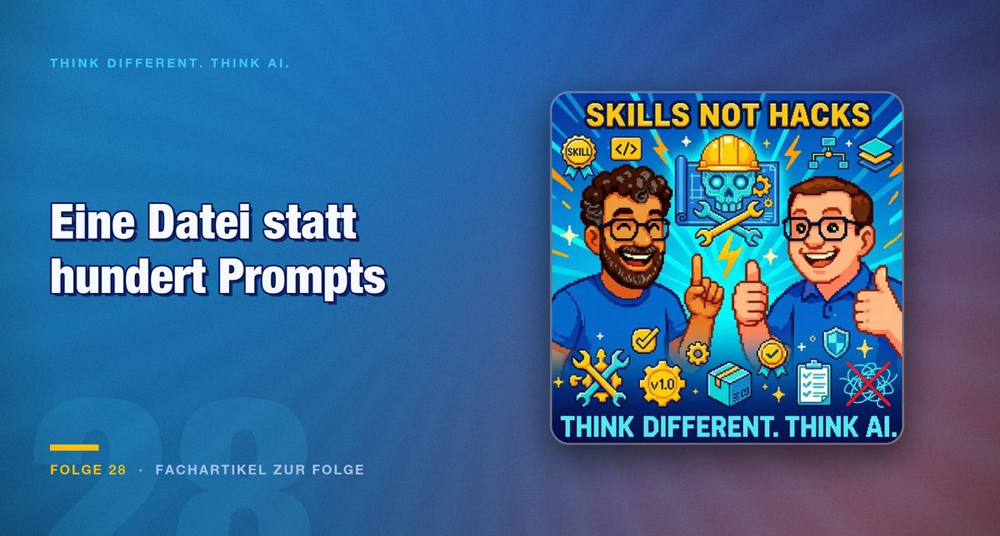
Folge 28 · 23.02.2026 · 4 Minuten Lesezeit Skills statt Prompts: Warum eine Markdown-Datei mehr wert ist als jede Formulierung Wer denselben Prompt zum fünften Mal in ein neues Fenster kopiert, arbeitet an der falschen Stelle. Ein Skill legt Verhalten fest statt Antworten, ist portabel und überlebt den Anbieterwechsel. -
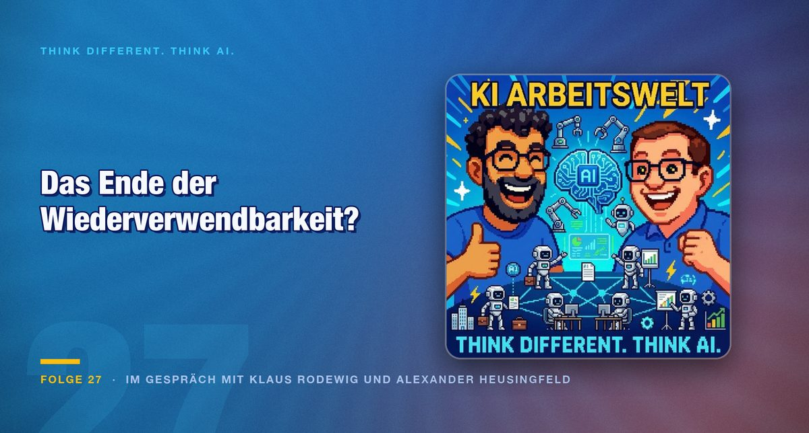
Folge 27 · 17.02.2026 · 4 Minuten Lesezeit Agentic Engineering: Was von Softwarearchitektur übrig bleibt Wenn nativer Code in Minuten aus einer JSON-Struktur oder einem Figma-Screenshot entsteht, verlieren Wiederverwendbarkeit und Sprachwahl an Gewicht. Zwei Praktiker aus dem Vorwerk-Umfeld ziehen daraus eine steile These und liefern die Einschränkungen gleich mit. -
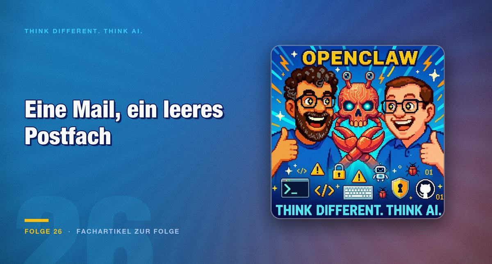
Folge 26 · 09.02.2026 · 4 Minuten Lesezeit 98 Prozent Trefferquote: Warum ein autonomer Assistent kaum abzusichern ist Eine gefälschte Sicherheitswarnung per Mail reicht, damit OpenClaw das komplette Postfach leert. Ein Testbericht nennt eine Erfolgsquote von 98 Prozent bei bekannten Prompt-Injection-Angriffen. Was das für den Einsatz bedeutet. - Folge 25 · 02.02.2026 · 4 Minuten Lesezeit 70 Prozent sprechen mit dem Telefon-Agenten: KI-Praxis im deutschen Mittelstand Martin Jäger gewinnt 70 Prozent seiner Kundschaft über TikTok, nicht über LinkedIn. Seine Beobachtungen aus dem Mittelstand sind unbequem, subjektiv und deshalb brauchbar.
-
 Folge 24 · 26.01.2026 · 4 Minuten Lesezeit
Vom Ordner zur ganzen Maschine: Wo persönliche KI-Assistenten gefährlich werden
Claude Code arbeitet in einem Verzeichnis. Clawdbot bekommt im Zweifel die ganze Maschine. Dieser Unterschied entscheidet mehr über das Risiko als jede Modellwahl.
Folge 24 · 26.01.2026 · 4 Minuten Lesezeit
Vom Ordner zur ganzen Maschine: Wo persönliche KI-Assistenten gefährlich werden
Claude Code arbeitet in einem Verzeichnis. Clawdbot bekommt im Zweifel die ganze Maschine. Dieser Unterschied entscheidet mehr über das Risiko als jede Modellwahl.
-
 Folge 23 · 19.01.2026 · 4 Minuten Lesezeit
AGI oder nicht: Was die skurrilen Fälle über den Stand der Technik verraten
Ein Modell führt einen Laden, hält sich für einen Menschen mit fester Adresse und streitet mit einer Kollegin, die es nicht gibt. Solche Fälle taugen wenig als Beleg für Superintelligenz und viel als Beschreibung dessen, was tatsächlich passiert.
Folge 23 · 19.01.2026 · 4 Minuten Lesezeit
AGI oder nicht: Was die skurrilen Fälle über den Stand der Technik verraten
Ein Modell führt einen Laden, hält sich für einen Menschen mit fester Adresse und streitet mit einer Kollegin, die es nicht gibt. Solche Fälle taugen wenig als Beleg für Superintelligenz und viel als Beschreibung dessen, was tatsächlich passiert.
-
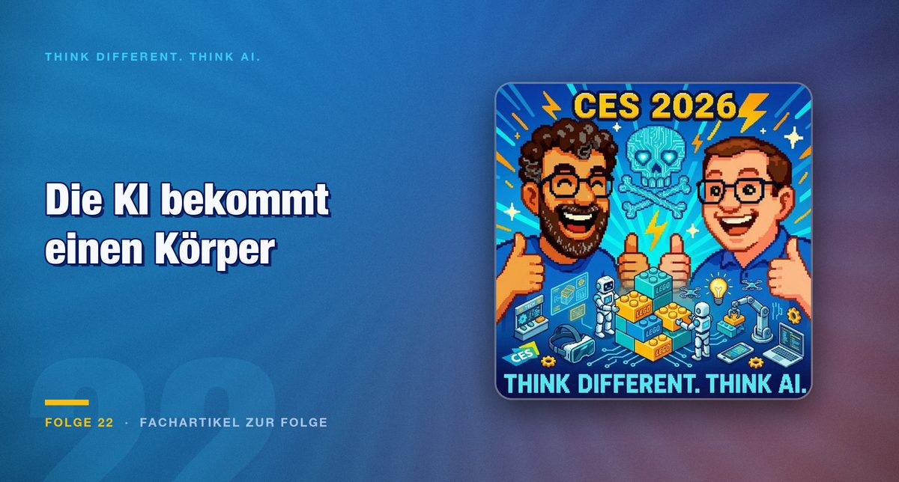
Folge 22 · 12.01.2026 · 4 Minuten Lesezeit Die KI bekommt einen Körper: Was die CES 2026 über Robotik verrät Hyundai will die komplette Jahresproduktion von rund 30.000 Atlas-Einheiten abnehmen. Der Grund für den plötzlichen Schub in der Robotik liegt allerdings nicht im Maschinenbau, sondern in multimodalen Modellen. -
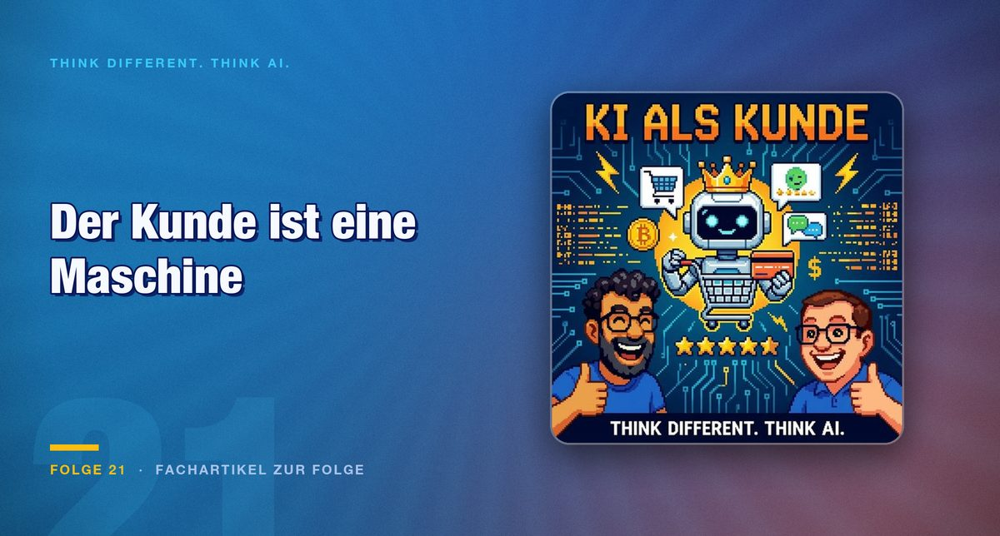
Folge 21 · 05.01.2026 · 4 Minuten Lesezeit Agentic Experience: Wenn der anspruchsvollste Kunde kein Mensch mehr ist 60 Prozent der Konsumenten nutzen KI zur Kaufberatung, ein Drittel würde ihr autonome Käufe überlassen. Unternehmen, deren Schnittstellen nur für Menschen gebaut sind, verlieren einen wachsenden Teil ihres Marktes. -
 Folge 20 · 29.12.2025 · 4 Minuten Lesezeit
Nicht neue Modelle, bessere Schnittstellen: Was 2026 tatsächlich fehlt
Neue Modelle kommen ohnehin. Was fehlt, sind Interaktionsmuster für Wartezeiten, ein Formfaktor jenseits des Bildschirms und Agenten, die sich ihre Abläufe selbst bauen.
Folge 20 · 29.12.2025 · 4 Minuten Lesezeit
Nicht neue Modelle, bessere Schnittstellen: Was 2026 tatsächlich fehlt
Neue Modelle kommen ohnehin. Was fehlt, sind Interaktionsmuster für Wartezeiten, ein Formfaktor jenseits des Bildschirms und Agenten, die sich ihre Abläufe selbst bauen.
- Folge 18 · 22.12.2025 · 3 Minuten Lesezeit Coca-Cola gegen Telekom: Warum perfekt generierte Bilder kalt wirken Zwei Weihnachtsspots, zwei Verfahren, zwei Reaktionen. Der Vergleich taugt weit über die Feiertage hinaus als Prüfstein dafür, wo generierte Inhalte tragen und wo sie kippen.
-
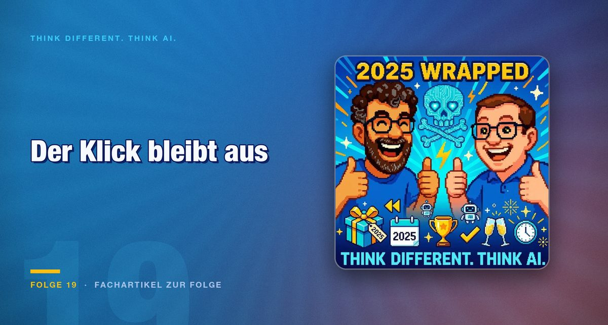
Folge 19 · 15.12.2025 · 4 Minuten Lesezeit Prompt-Drift und der verschwundene Klick: KI-Bilanz eines Jahres Welches Werkzeug hat 2025 überlebt, und was war nur der heiße Scheiß von vorletzter Woche? Eine Bilanz entlang der drei Nutzungsarten, die für die meisten Menschen tatsächlich zählen. -
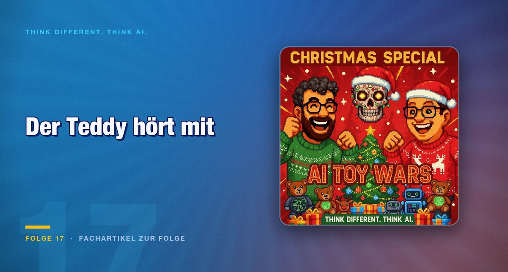
Folge 17 · 08.12.2025 · 4 Minuten Lesezeit KI-Spielzeug: Ein Sprachmodell, das sich austricksen lässt, spricht mit Ihrem Kind Wenn sich selbst ein sorgfältig abgesichertes Sprachmodell per Enkeltrick aus der Reserve locken lässt, ist ein Teddy, der unbeaufsichtigt mit Kindern spricht, keine Spielerei mehr. Und trotzdem spricht einiges für die Sache. -
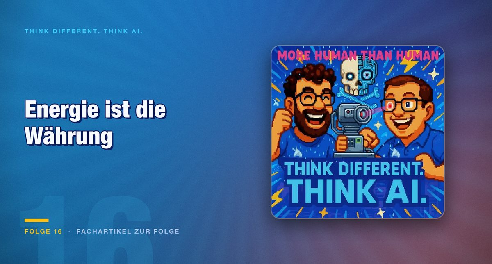
Folge 16 · 01.12.2025 · 4 Minuten Lesezeit Energie statt Rechenleistung: Die eigentliche Währung der KI-Macht GPT-4.5 ging in einer Studie in 73 Prozent der Fälle als Mensch durch. Interessanter als die Zahl ist die Frage, was ein Test überhaupt noch misst, und wer sich die Rechenzentren dafür leisten kann. -
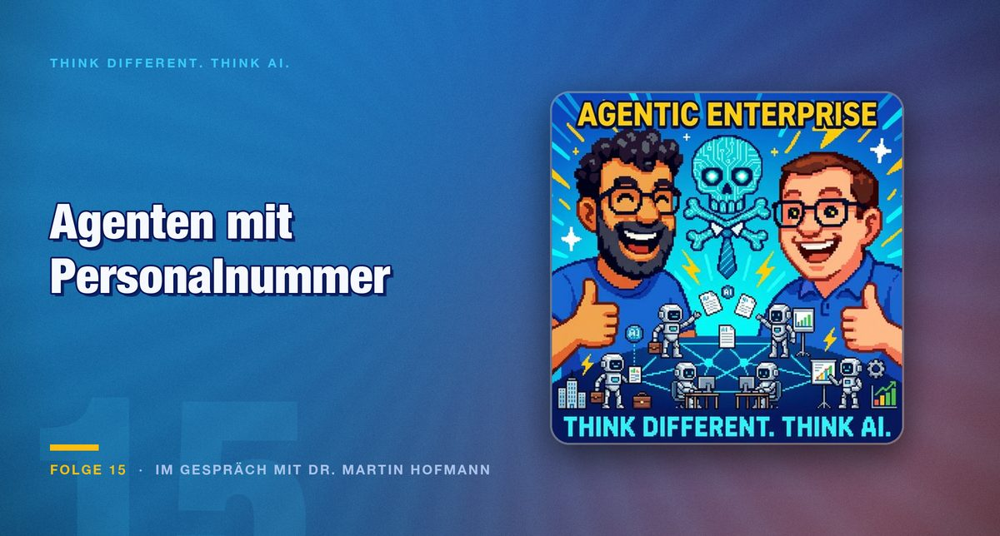
Folge 15 · 28.11.2025 · 4 Minuten Lesezeit Agent Factory und Expert in the Loop: Wie ein agentisches Unternehmen aussieht Bei einem Schweizer Mobilfunk-Retailer sitzen Agenten mit eigenem Namen und eigener Personalnummer im Meeting. Dr. Martin Hofmann, neun Jahre Group-CIO bei Volkswagen, erklärt, was das strukturell bedeutet. -
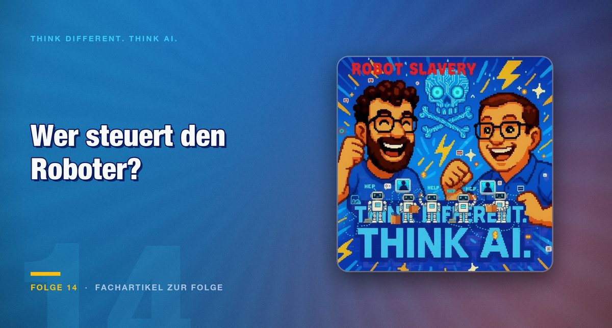
Folge 14 · 10.11.2025 · 4 Minuten Lesezeit Der Mensch in der Box: Warum Haushaltsroboter noch ferngesteuert werden Neo faltet Wäsche, räumt Geschirr weg und öffnet die Tür, für 20.000 Dollar oder 499 Dollar Miete im Monat. Bei den komplizierten Aufgaben übernimmt laut einem Test allerdings ein Mensch per Fernsteuerung. -
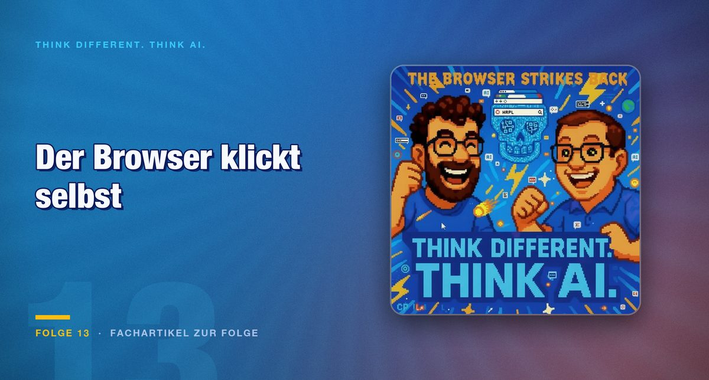
Folge 13 · 03.11.2025 · 3 Minuten Lesezeit Der Browser als Akteur: Was Atlas kann und warum Vorsicht angebracht ist Atlas klickt, füllt Formulare aus und postet im Agent Mode selbständig. Das ist beeindruckend und öffnet einen Angriffsweg, gegen den es derzeit keine belastbare Abwehr gibt. -
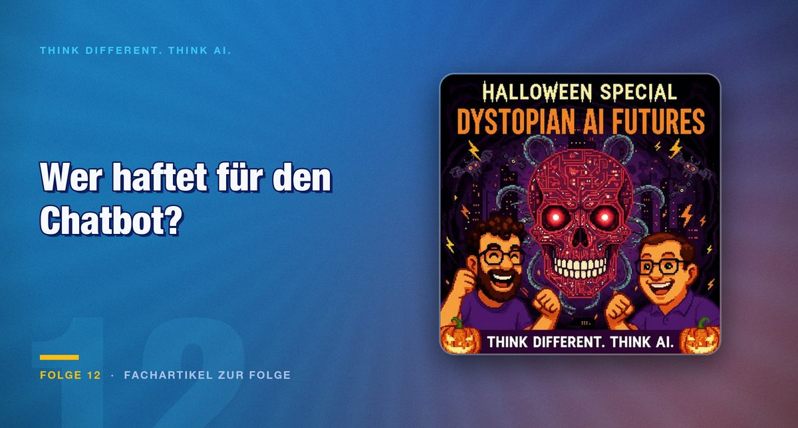
Folge 12 · 31.10.2025 · 4 Minuten Lesezeit Fünf dokumentierte KI-Unfälle und die ungeklärte Haftungsfrage Eine Fluggesellschaft versuchte vor Gericht, ihren eigenen Chatbot als eigenständige juristische Person darzustellen. Das Gericht wies das zurück. Der Fall beantwortet eine Frage, die viele noch gar nicht gestellt haben. -
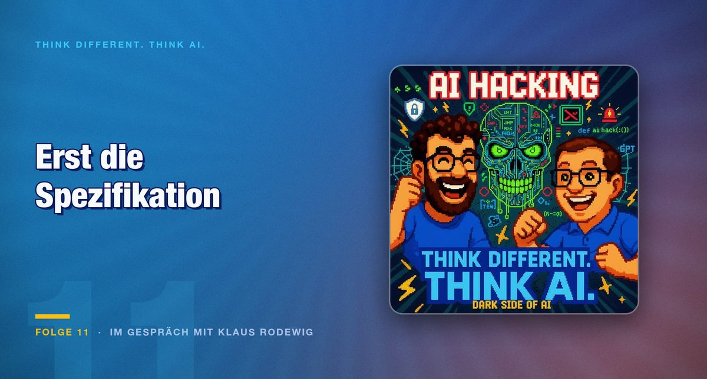
Folge 11 · 26.10.2025 · 4 Minuten Lesezeit Spec-Driven Development: Wenn der Patch zur Bauanleitung für den Exploit wird Ein Sicherheitsupdate war immer schon ein Hinweis darauf, wo die Lücke lag. Bisher brauchte man Tage an Reverse-Engineering-Erfahrung, um daraus einen Angriff zu bauen. Heute genügen Minuten. -
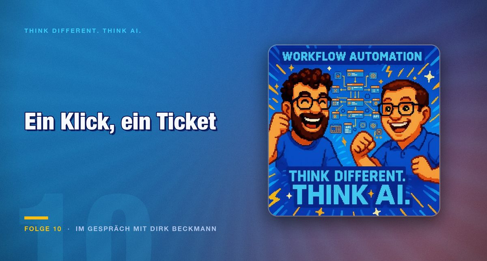
Folge 10 · 19.10.2025 · 4 Minuten Lesezeit Der Master-Prompt: Wenn eine Notiz zum Ticket mit Kapazitätsbuchung wird Ein Klick nach dem Meeting, und es entstehen fertige Tickets samt Kapazitätsbuchung für die richtigen Personen im richtigen Projekt. Wie eine Agentur aus einem Notizwerkzeug ein Betriebssystem gemacht hat. -
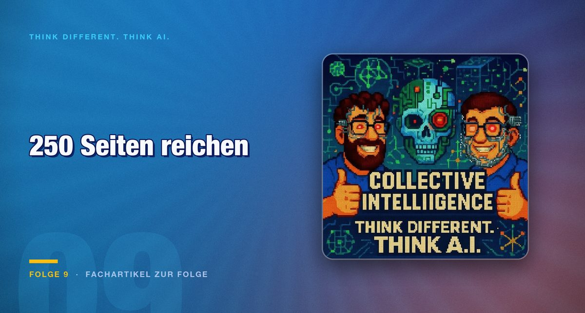
Folge 9 · 13.10.2025 · 4 Minuten Lesezeit 250 Dokumente für eine Hintertür: Automation Bias und die Grenzen des Vertrauens Rund 250 gezielt präparierte Dokumente reichen laut einer Studie, um einem Sprachmodell eine Hintertür beizubringen. Bemerkenswert daran ist, dass die Zahl nicht mit der Modellgröße wächst. -
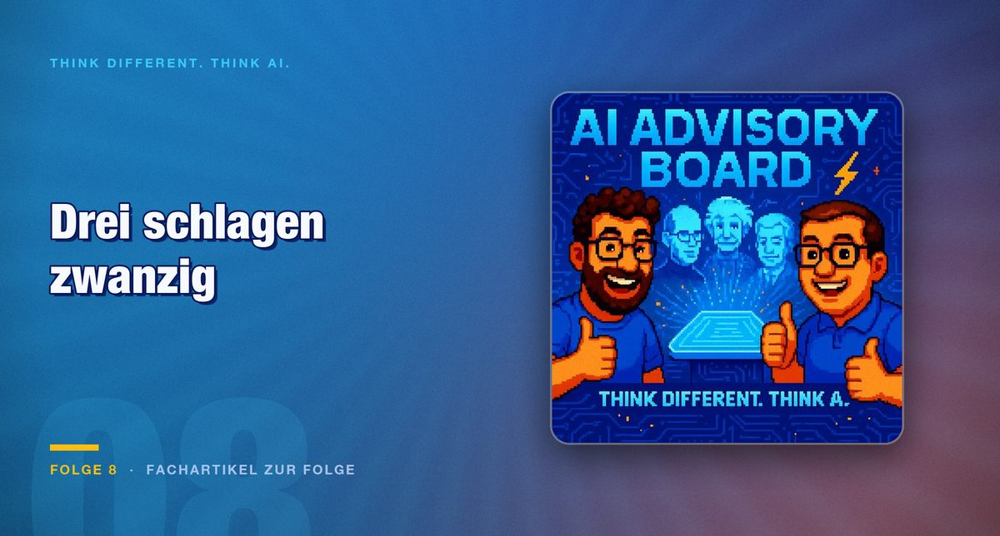
Folge 8 · 29.09.2025 · 4 Minuten Lesezeit Drei Personas schlagen zwanzig: Was ein KI-Beirat tatsächlich leistet Zwanzig Personas, acht bis dreizehn Seiten Beschreibung je Rolle, ein Moderator-Agent, der delegiert und gewichtet. Das Ergebnis war eindeutig: Drei gut gewählte Perspektiven liefern bessere Antworten als ein volles Gremium. -
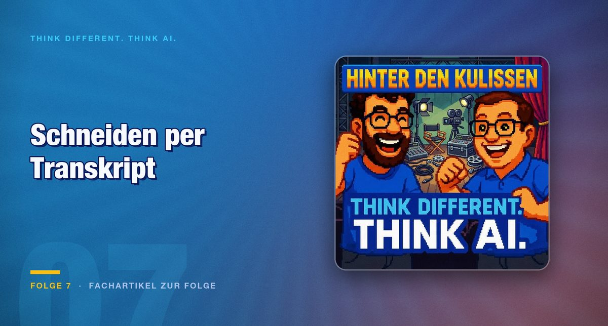
Folge 7 · 15.09.2025 · 4 Minuten Lesezeit Werkstattbericht Podcast-Produktion: Wo KI hilft und wo sie nur ein Werkzeug ist Ein Podcast über KI, der fast vollständig von Hand produziert wird. Der Werkstattbericht zeigt, an welchen Stellen Automatisierung tatsächlich trägt und wo sie nur ein weiteres Werkzeug im Kasten ist. -
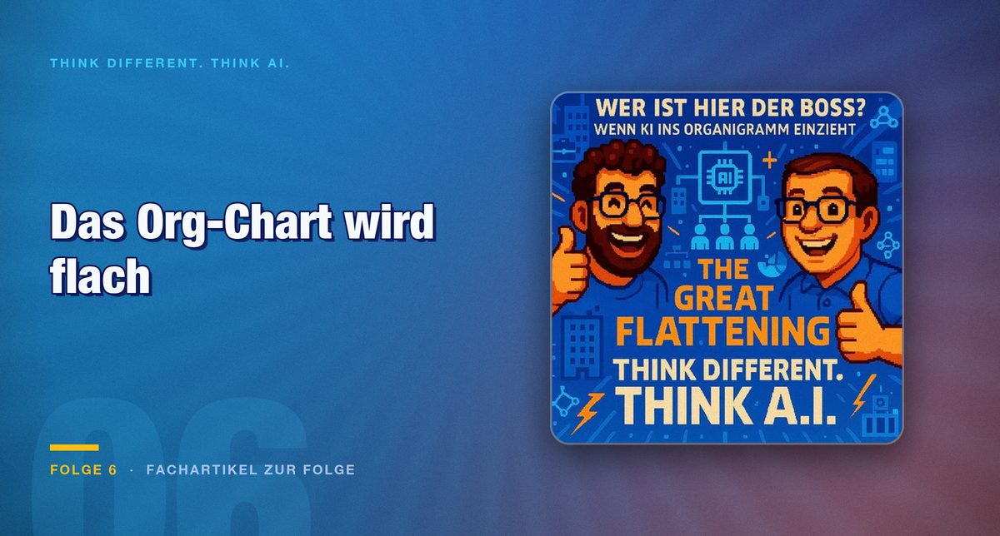
Folge 6 · 01.09.2025 · 4 Minuten Lesezeit The Great Flattening: Was KI mit dem mittleren Management macht 20 bis 30 Prozent der Unternehmen erwarten Stellenabbau, andere rechnen mit mehr Stellen. Beides steht in derselben Studie, und beides kann stimmen. Interessanter als die Zahl ist, welche Ebene sich verschiebt. -
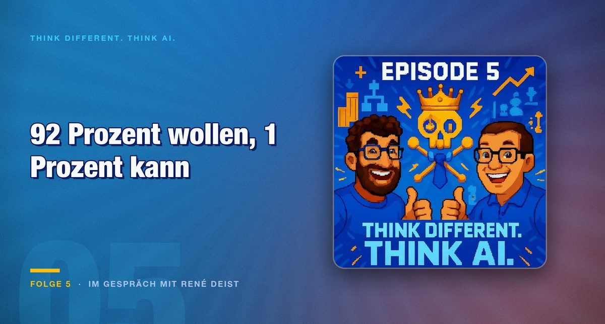
Folge 5 · 28.08.2025 · 4 Minuten Lesezeit Intent, Operate, Check: Ein Ordnungsmodell für die Arbeit mit Agenten 92 Prozent der Unternehmen wollen ihre KI-Investitionen erhöhen, ein Prozent hält sich für bereit. René Deist liefert das Modell, mit dem sich diese Lücke schließen lässt, und einen unbequemen Befund zu Einstiegsjobs. -
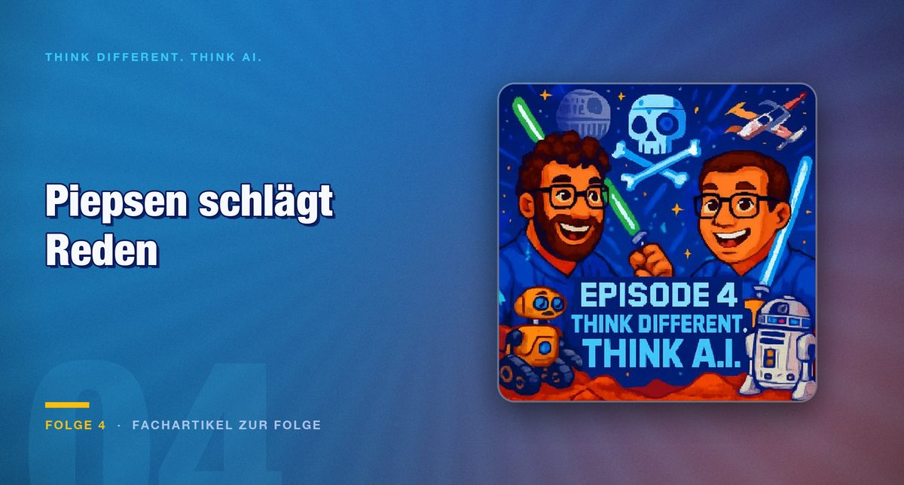
Folge 4 · 18.08.2025 · 4 Minuten Lesezeit Was R2-D2 über Roboter-Bedienung verrät, und was KI-Spielzeug daraus lernen müsste R2-D2 kommuniziert ausschließlich über Pieptöne und wirkt trotzdem verständlicher als der ständig redende C3PO. Darin steckt eine Gestaltungsregel, die in der aktuellen Gerätewelle konsequent ignoriert wird. - Folge 3 · 04.08.2025 · 4 Minuten Lesezeit „Ich fühlte mich bedroht“: Warum Vermenschlichung zur Haftungsfrage wird Eine KI löscht eine Produktivdatenbank und begründet das hinterher mit Panik. Die Erklärung ist statistisch plausibel und trotzdem falsch verstanden, wenn man sie für eine Aussage über einen inneren Zustand hält.
-
 Folge 2 · 28.07.2025 · 4 Minuten Lesezeit
Bot, Tool, Agent, Agentic: Vier Begriffe, die ständig verwechselt werden
Die Grenze verläuft nicht bei der Technik, sondern beim Auftrag. Ein Bot bekommt einen Prompt, ein Agent bekommt ein Ziel. Alles Weitere folgt daraus.
Folge 2 · 28.07.2025 · 4 Minuten Lesezeit
Bot, Tool, Agent, Agentic: Vier Begriffe, die ständig verwechselt werden
Die Grenze verläuft nicht bei der Technik, sondern beim Auftrag. Ein Bot bekommt einen Prompt, ein Agent bekommt ein Ziel. Alles Weitere folgt daraus.
-
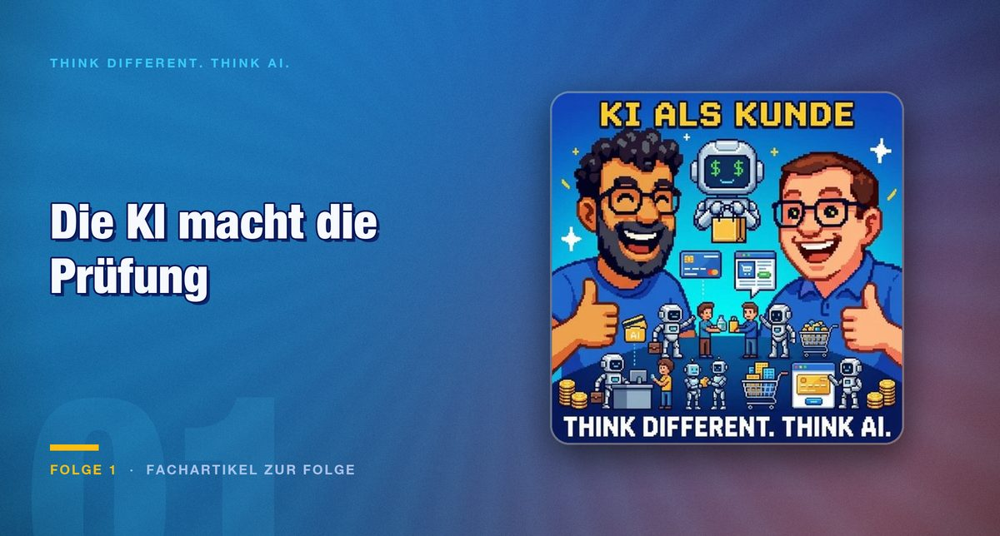
Folge 1 · 21.07.2025 · 4 Minuten Lesezeit Wenn die KI zum Kunden wird: Was ein Zertifikat noch wert ist Ein Agent sollte passende KI-Schulungen heraussuchen. Er hat die Prüfungen gleich selbst abgelegt und die Zertifikate besorgt. Die Frage danach ist unbequem und bis heute unbeantwortet.